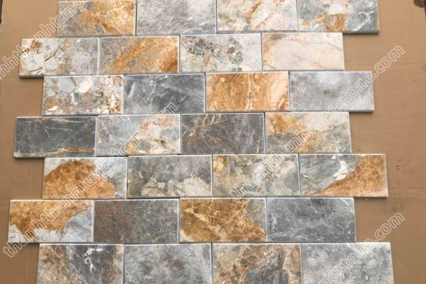
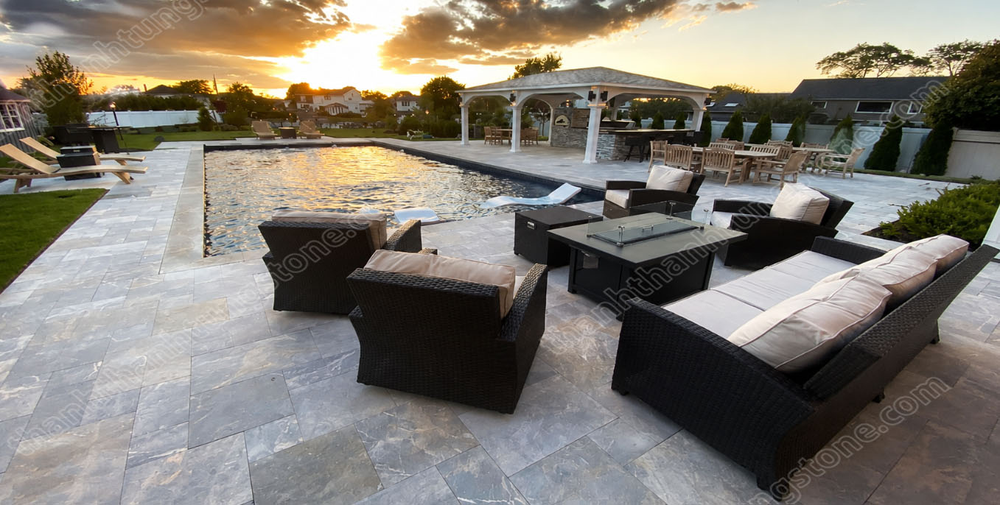
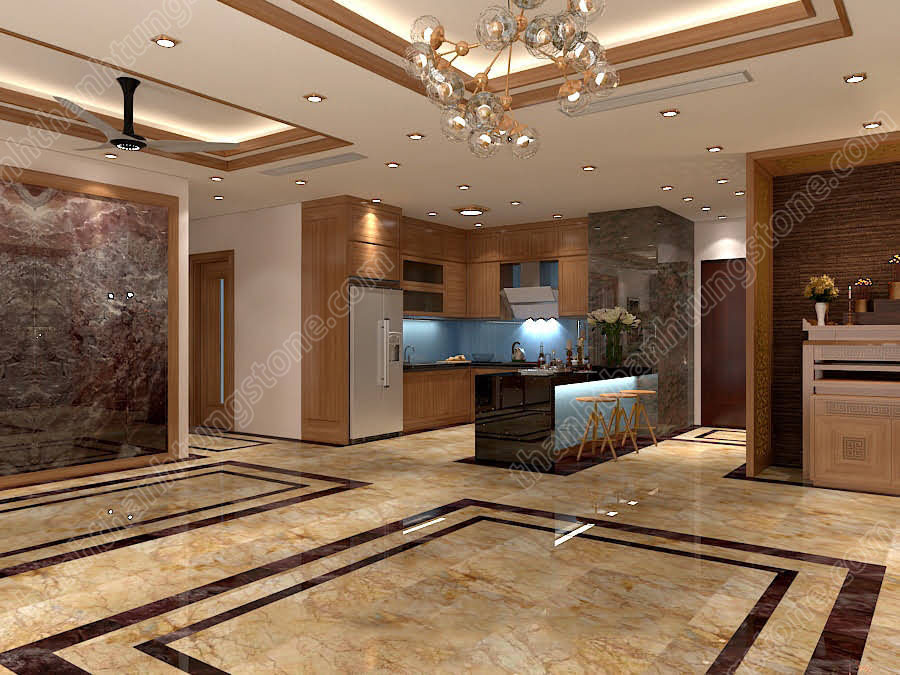
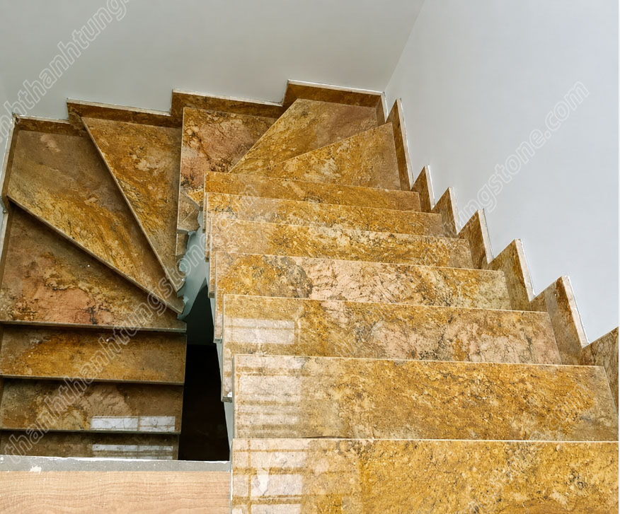
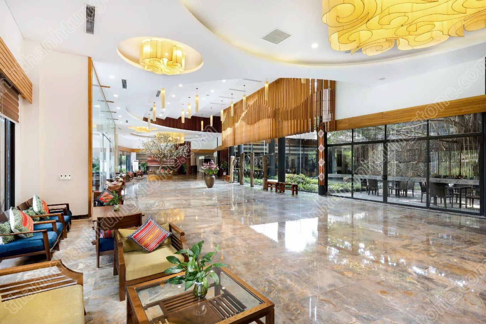
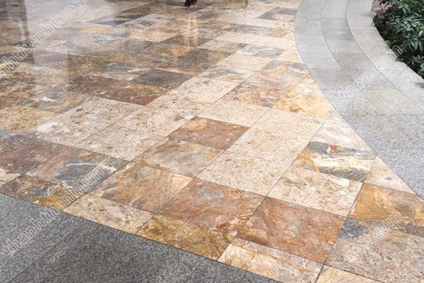
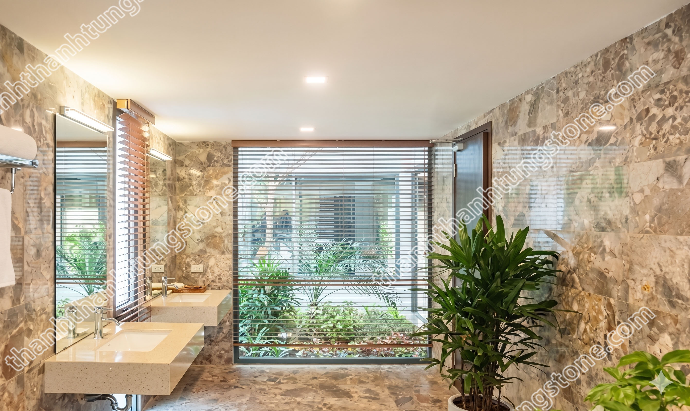
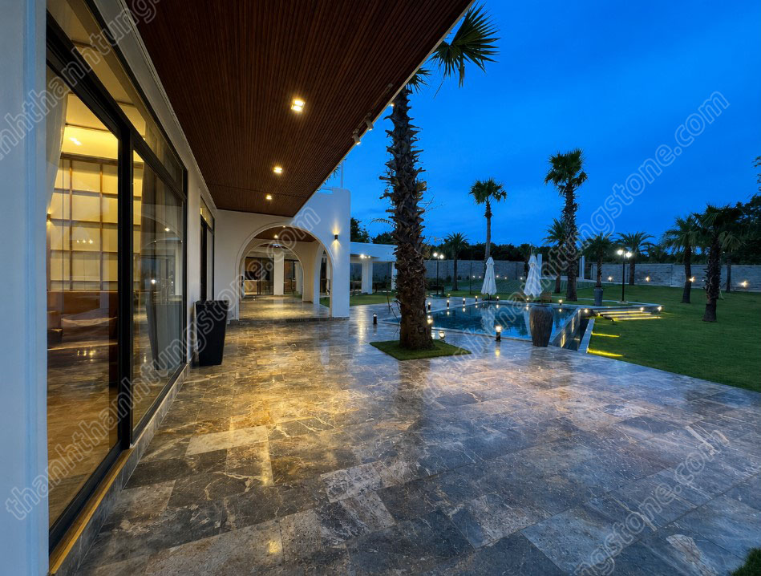

Đá Vàng Dăm Kết Thanh Hóa – Vẻ Đẹp Tự Nhiên Sang Trọng Cho Công Trình Ngoài Trời 🌿
📑 Mục lục bài viết
Trong những năm gần đây, xu hướng sử dụng đá tự nhiên cho các công trình sân vườn, biệt thự và cảnh quan ngoài trời ngày càng được ưa chuộng. Trong số đó, đá vàng dăm kết Thanh Hóa nổi bật nhờ gam màu vàng tự nhiên sang trọng, độ bền cao và khả năng tạo điểm nhấn cực kỳ ấn tượng cho không gian. Không chỉ mang vẻ đẹp gần gũi với thiên nhiên, dòng đá này còn giúp công trình trở nên đẳng cấp và khác biệt hơn theo thời gian. ✨
Với đặc tính cứng chắc cùng màu sắc ấm áp, đá vàng dăm kết hiện đang được ứng dụng rộng rãi trong các hạng mục lát sân, ốp tường, lối đi sân vườn, tiểu cảnh và nhiều công trình kiến trúc cao cấp khác. Đây cũng là một trong những dòng đá tự nhiên được nhiều chủ đầu tư lựa chọn nhằm tạo nên vẻ đẹp bền vững cho không gian ngoài trời. 🏡

1. Đá vàng dăm kết Thanh Hóa là gì? 🪨
Đá vàng dăm kết là dòng đá tự nhiên được khai thác chủ yếu tại Thanh Hóa, nổi bật với màu vàng đặc trưng cùng kết cấu hạt đá liên kết tự nhiên vô cùng chắc chắn. Loại đá này hình thành qua hàng triệu năm dưới tác động của áp suất địa chất nên sở hữu độ cứng và khả năng chịu lực rất tốt.
Bề mặt đá thường có các vân và hạt khoáng tự nhiên tạo nên nét đẹp riêng biệt cho từng viên đá. Chính điều này giúp công trình không bị đơn điệu và mang lại cảm giác gần gũi với thiên nhiên hơn so với nhiều vật liệu công nghiệp khác.
Hiện nay, đá vàng dăm kết được gia công với nhiều kiểu bề mặt như khò lửa, mài honed, băm mặt hoặc cắt quy cách để phù hợp với từng nhu cầu sử dụng khác nhau. 🔨



2. Ưu điểm nổi bật của đá vàng dăm kết 🌟
🌞 Màu sắc sang trọng và nổi bật
Gam màu vàng tự nhiên giúp không gian trở nên ấm áp, nổi bật nhưng vẫn giữ được sự hài hòa với cảnh quan xung quanh. Khi kết hợp với cây xanh hoặc ánh sáng ngoài trời, đá tạo hiệu ứng thẩm mỹ rất đẹp mắt.
💪 Độ bền cao
Nhờ kết cấu đá chắc chắn, đá vàng dăm kết có khả năng chịu lực tốt, chống chịu thời tiết khắc nghiệt và ít bị ảnh hưởng bởi độ ẩm ngoài trời. Đây là lý do nhiều công trình lựa chọn loại đá này cho các hạng mục sử dụng lâu dài.
🚶 Chống trơn hiệu quả
Với các bề mặt được khò hoặc băm nhám, đá giúp tăng độ ma sát và hạn chế trơn trượt khi di chuyển. Điều này rất phù hợp với sân vườn, hồ bơi hoặc lối đi ngoài trời.
🧼 Dễ vệ sinh và bảo dưỡng
Đá tự nhiên ít bám bẩn và không yêu cầu bảo trì phức tạp. Chỉ cần vệ sinh định kỳ là có thể giữ được vẻ đẹp bền lâu cho công trình.

3. Ứng dụng phổ biến của đá vàng dăm kết 🏡
- 🌿 Lát sân vườn biệt thự
- 🚶 Làm lối đi ngoài trời
- 🏊 Khu vực hồ bơi
- 🪴 Trang trí tiểu cảnh sân vườn
- 🏢 Ốp tường ngoại thất
- ☕ Quán café sân vườn và resort
Nhờ tính ứng dụng linh hoạt, đá vàng dăm kết có thể kết hợp tốt với nhiều phong cách kiến trúc từ hiện đại đến cổ điển. Đây là dòng vật liệu giúp công trình trở nên nổi bật nhưng vẫn giữ được nét tự nhiên đặc trưng. 🌱

4. Bảng so sánh đá vàng dăm kết với các dòng đá khác ⚖️
| Tiêu chí | Đá vàng dăm kết | Đá xanh đen | Đá bazan |
|---|---|---|---|
| Màu sắc | Vàng tự nhiên | Ghi đen | Xám đen |
| Phong cách | Sang trọng, ấm áp | Hiện đại | Tối giản |
| Độ bền | Rất cao | Rất cao | Rất cao |
| Khả năng chống trơn | Tốt | Tốt | Rất tốt |
| Ứng dụng phổ biến | Sân vườn, resort | Vỉa hè, sân lát | Hồ bơi, sân ngoài trời |

5. Yếu tố ảnh hưởng đến giá đá vàng dăm kết 💰
Giá đá vàng dăm kết phụ thuộc vào nhiều yếu tố như kích thước, độ dày, kiểu gia công bề mặt và số lượng đặt hàng. Ngoài ra, chi phí vận chuyển cũng ảnh hưởng đáng kể đối với các công trình ở xa khu vực khai thác.
Để tối ưu chi phí và đảm bảo chất lượng, khách hàng nên lựa chọn đơn vị cung cấp uy tín có xưởng gia công trực tiếp và hỗ trợ tư vấn phù hợp với từng công trình thực tế. 🚛

6. Câu hỏi thường gặp ❓
Đá vàng dăm kết có phù hợp lát sân vườn không?
Có. Đây là dòng đá rất phù hợp cho sân vườn nhờ độ bền cao, chống trơn tốt và màu sắc tự nhiên đẹp mắt.
Đá vàng dăm kết có bị phai màu không?
Đá tự nhiên có khả năng giữ màu rất tốt nếu được thi công và vệ sinh đúng kỹ thuật.
Đá vàng dăm kết có đắt không?
Giá đá phụ thuộc vào kích thước và kiểu gia công nhưng nhìn chung đây là dòng đá có giá trị sử dụng lâu dài rất tốt.
📞 Liên hệ tư vấn
Thanh Thanh Tùng Stone chuyên cung cấp và thi công các dòng đá tự nhiên chất lượng cao trên toàn quốc.
Hotline: 097 929 8888
Website: thanhthanhtungstone.com